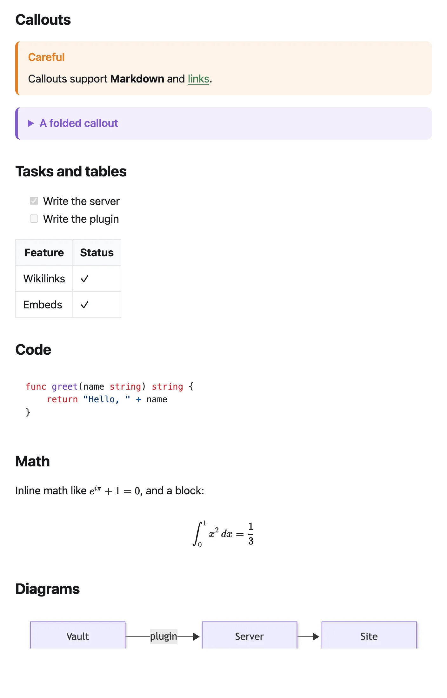

Guides
Writing notes
Write the way you already do in Obsidian. Most of what you use renders on the site the same way, and a few note properties let you fine-tune titles, dates and addresses.
What works
| Feature | Write | On the site |
|---|---|---|
| Links | [[Note]], [[Note|text]] | A link to the note, or plain text if it isn't published |
| Heading links | [[Note#Heading]] | Jumps to the heading |
| Block links | [[Note#^id]] | Jumps to the block marked ^id |
| Embeds | ![[Note]], ![[Note#Heading]] | The note or section shown inline, in a box |
| Images | ![[photo.jpg]], ![[photo.jpg|300]], ![[photo.jpg|300x200]] | The image, optionally resized |
| Image placement | ![[photo.jpg|center]], ![[photo.jpg|right|200]], ![[photo.jpg|A harbor at dusk|100]] | Centered, or floated left or right with the text flowing around it (stacked on phones). Other text is the image's description for screen readers |
| YouTube, Vimeo | ,  | An embedded player. YouTube plays from youtube-nocookie.com and Vimeo with “do not track”, and nothing loads until the player scrolls into view |
| PDF, audio, video | ![[paper.pdf]], ![[talk.mp3]], ![[demo.mp4]] | An inline viewer or player |
| Tags | #idea, #projects/kvist | A link to the tag's page; nested tags have their own pages |
| Callouts | > [!tip] Title, foldable with [!tip]- or [!tip]+ | Colored boxes; foldable ones open on click |
| Highlights | ==text== | Highlighted text |
| Footnotes | text[^1] and [^1]: note | Numbered notes at the bottom |
| Tasks | - [ ], - [x] | Checkboxes |
| Tables, strikethrough | Standard Markdown | As in Obsidian |
| Code | Fenced code with a language, e.g. ```python | Syntax highlighting, light and dark |
| Math | $e^{i\pi}+1=0$, $$ … $$ | Typeset with KaTeX |
| Diagrams | A ```mermaid code block | A Mermaid diagram |
| Comments | %% hidden %%, <!-- hidden --> | Removed before publishing |
Single line breaks are kept as line breaks, as in Obsidian's reading view. If you turned on Strict line breaks in Obsidian, set strict_line_breaks: true in the settings note and a single line break becomes a space, as there; an empty line still starts a new paragraph.

Use wikilinks between notes
kvist resolves [[wikilinks]]. Markdown-style links to other notes, like [text](Other%20note.md), are not converted and won't work on the site. Links to websites ([text](https://…)) work normally. Obsidian uses wikilinks by default; check Settings → Files and links → Use [[Wikilinks]].
Note properties
Properties (frontmatter) at the top of a note control how it appears. All are optional.
---
title: A better title than the file name
description: One sentence for search results and link previews.
created: 2026-09-01
updated: 2026-10-02
tags: [articles, writing]
aliases: [Another name]
permalink: /about/
publish: true
stage: budding
---| Property | What it does |
|---|---|
title | The page title. Without it, kvist uses the first # Heading, then the file name. |
description or summary | Shown in lists, search results and link previews. Without it, kvist uses the first paragraph. |
created or date | The “Planted” date. Without it, the file's modification time. |
updated, modified or lastmod | The “Tended” date, and the order of “Recently tended”. |
tags | Tags, in addition to the ones written in the text. |
aliases | Other names for the note. Search finds the note by them. (Links still need the note’s file name: [[Real name|alias]].) |
permalink | A custom address, such as /about/. |
publish | true or false; see Publishing notes. |
stage | Growth stage: seedling 🌱, budding 🌿 or evergreen 🌳, shown as a badge. |
Other properties stay private: they are never put on the site unless the server lists them in expose_frontmatter (which is how stage is enabled in the default config).
Page addresses
A note's address comes from its path: each part is lowercased, and spaces and punctuation become dashes.
| Note | Address |
|---|---|
Kvist/My First Note.md | /kvist/my-first-note/ |
Kvist/Recipes/Recipes.md | /kvist/recipes/ (a folder note, named like its folder) |
Kvist/Recipes/index.md | /kvist/recipes/ (also a folder note) |
A note with permalink: /about/ | /about/ |
Renaming or moving a note changes its address, so old links to it stop working. If two notes would get the same address, the build stops and names both, and your site keeps showing the previous version until you fix it.
The home page
By default the home page shows your site's title and description, cards for your folders or menu groups, and a list of recently updated notes. To use one of your notes instead, either publish a note named index.md at the top of your vault, or set home in the settings note:
---
home: "[[Welcome]]"
---Tags
Every tag on a published note gets a page at /tags/<tag>/ listing its notes, newest first. /tags/ shows every topic as a card with its size, its newest notes and its sub-tags, with a filter and an A–Z or “most notes” order. Nested tags like #projects/kvist get their own page, and the parent tag's page includes them. Tags can also group the menu.
Preview before publishing
To see your site on your computer before publishing, run kvist's preview server. It needs the kvist program (see the command line) and a copy of your server's kvist.toml, so it applies the same rules:
kvist dev --dir ~/Documents/MyVault --config kvist.tomlOpen http://127.0.0.1:1313. The page reloads whenever you save a note.